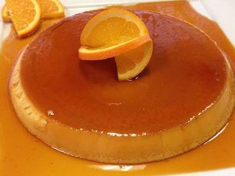

Home
Mexican Flan

Description
This Mexican flan recipe was given to me by my mother-in-law, who is from Durango, Mexico. I had to beg her for years to give me this custard recipe — she finally gave it to me one Christmas. I like to add orange zest, but the original dessert recipe calls for just pure vanilla.
Ingredients
- 1 cup white sugar
- 1 (14 ounce) can sweetened condensed milk
- 1 cup whole milk
- 3 large eggs
- 3 large egg yolks
- ¼ cup freshly squeezed orange juice
- 1 tablespoon grated orange zest
- 1 tablespoon vanilla extract
- 1 tablespoon cornstarch
- 1 cup heavy cream
Steps
- Place sugar into a heavy saucepan over medium-high heat. Cook, stirring constantly, until sugar melts and turns a golden amber color, about 10 minutes. Watch carefully once syrup begins to change color because it burns quickly. Carefully pour caramel syrup into a flan mold. Set aside to cool.
- Preheat the oven to 350 degrees F (175 degrees C). Place an oven rack in the middle position.
- Place sweetened condensed milk, whole milk, eggs, egg yolks, orange juice, orange zest, vanilla, and cornstarch into a blender; blend until smooth, about 1 minute. Pour in cream and pulse several times to incorporate. Pour mixture over cooled caramel syrup in the flan mold.
- Line a roasting pan with a damp kitchen towel. Place the filled flan mold carefully on the towel in the roasting pan, then place the roasting pan on the oven rack. Fill the roasting pan with enough boiling water to reach halfway up the sides of the flan mold.
- Bake in the preheated oven until the center of flan is set but still slightly jiggles when nudged, 45 minutes to 1 hour. Let cool, then refrigerate for at least 4 hours.
- To serve, run a sharp paring knife around the inside of the mold to release flan. Place a serving plate on the mold, then flip the mold over. Gently lift the mold to release flan and allow caramel syrup to cascade over custard. Remove the mold.